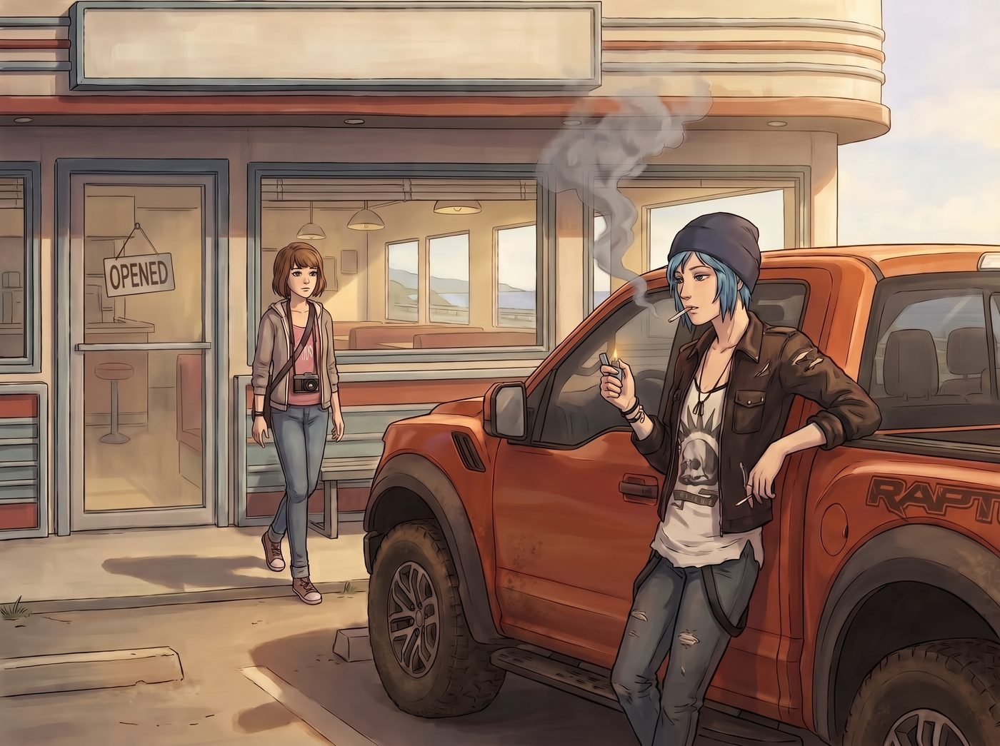

薄荷菸的誠實

吃飽喝足後，三人走出了公路餐館。
午後的陽光灑在福特猛禽皮卡寬大的引擎蓋上。Chloe 靠著車門，熟練地從破洞皮夾克的口袋裡掏出一包有些壓癟的萬寶路紅牌，叼出一根，用她那個標誌性的子彈頭打火機咔嗒一聲點燃。
她深吸了一口，然後仰起頭，朝著太平洋的微風吐出一長串濃烈、刺鼻的灰色煙圈。
一、一個隨口的問題
Max 拿著相機，看著 Chloe 那副極度享受又帶著點頹廢的樣子，突然想起了什麼。「說起來，Chloe，我好像從來沒見過妳抽薄荷菸。」Max 走過去，好奇地問道，「我記得萬寶路也有出綠色包裝的薄荷口味。妳是不喜歡那個味道，還是覺得抽薄荷菸……太娘娘腔，會破壞妳阿卡迪亞灣第一龐克惡霸的霸氣形象？」
聽到娘娘腔這個詞，Chloe 差點被煙嗆到。她大笑了一聲，彈了彈煙灰，轉過頭用一種看外星人的眼神看著 Max。
「哈？娘娘腔？Max，拜託，老娘就算現在穿著粉紅色的芭蕾舞裙、頭上綁著雙馬尾去砸別人的車窗，也照樣能嚇尿那幫街頭毒販好嗎？」Chloe 囂張地挑了挑眉，「我的霸氣是刻在骨子裡的，跟菸草裡加不加薄荷香精一點關係都沒有。」
「那為什麼只抽這種最烈、最嗆的？」Max 指了指她手裡那根散發著辛辣焦油味的紅牌萬寶路。
二、誠實的痛覺
Chloe 沉默了兩秒。她看著指尖燃燒的橘紅色菸頭，眼神裡那種玩世不恭的態度稍微收斂了一些，取而代之的是一種屬於叛逆少女的、隱秘的倔強。
「因為薄荷菸是個騙子。」Chloe 輕聲說道，再次深吸了一口手裡的烈菸。這一次，Max 能清晰地聽到她吸氣時，肺部和氣管發出的那種輕微的、粗糙的摩擦聲。
「當妳抽這種純粹的、廉價的劣質菸草時，它會狠狠地刮過妳的喉嚨。它會辣，會嗆，甚至會讓妳想咳嗽。它在清清楚楚地告訴妳：嘿，白痴，妳正在把有毒的致癌物吸進肺裡，這是在慢性自殺。」Chloe 看著吐出的煙霧在陽光下消散，嘴角勾起一抹自嘲的笑：「我喜歡這種誠實。我就是需要那種火辣辣的痛覺來提醒我……老娘還活著。但薄荷菸？那種涼颼颼的感覺就像是在給妳的喉嚨打麻藥，假裝一切都很清新、很安全。龐克是不打麻藥的，Max。痛就是痛，爛就是爛，我不需要加了糖衣的毒藥。」
三、商業合規欺詐
就在這時，後座的車窗緩緩降了下來。已經坐在車裡、正在用平板電腦重新規劃安全路線的 Lily，把她那顆戴著反光圓框眼鏡的腦袋探了出來。
「從生物化學和法務合規的角度來看，我完全贊同 Chloe 學姐對薄荷菸的定性。」Lily 軟糯的聲音介入了這場關於龐克哲學的討論，瞬間把畫風拉向了另一個硬核維度。
「薄荷菸並不是為了改變口味而存在的。」Lily 推了推眼鏡，像一台無情的科普機器般開始輸出：「薄荷醇會激活口腔和呼吸道的特定受體，產生局部的麻醉和冷卻效應。這是一種極度惡劣的商業合規欺詐。」
Max 和 Chloe 都愣住了，齊刷刷地看向她。
「大型菸草公司添加薄荷醇的真實目的，是為了降低菸草煙霧的刺激性，從而抑制人體的自然排斥反射。這使得吸菸者，尤其是初學者，能將有毒煙霧吸得更深、憋得更久。」Lily 的眼神中閃爍著對這種商業手段的冰冷鄙視：「這就像是在一份霸王條款的合約裡，用可愛的卡通字體來排版隱藏的免責聲明。這是一種偽善。相比之下，Chloe 學姐抽的這種無添加烈性菸草，至少在風險告知上做到了物理層面的誠實。」
Chloe 聽得目瞪口呆，隨後爆發出一陣狂笑。「哈哈哈哈！聽到了嗎 Max！實習生說了，我抽紅牌萬寶路是一種物理層面的誠實！我這是在堅守商業道德！」
四、繼父的煙盒
Chloe 興奮地隔著車窗和 Lily 擊了個掌。Lily 雖然表情依然平靜，但很給面子地伸出蒼白的小手，輕輕拍了一下 Chloe 戴著鉚釘手套的手掌。
「當然，」Chloe 轉過頭，趴在車頂上，語氣裡多了一絲只有 Max 能聽懂的苦澀，「還有一個更現實的原因。這都是我那個繼父老兵痞的錯。」
Max 恍然大悟。David，Chloe 的繼父，那個曾經讓青春期的她感到窒息、有著嚴重控制狂傾向的退伍軍人——雖然這幾年，隨著 Chloe 自己也漸漸長大，兩人之間那層厚厚的隔閡早就已經被時間和好幾次推心置腹的談話磨平了，現在她跟 David 的關係，甚至可以說是相處融洽的忘年交。但十四五歲那個正在叛逆期、什麼都看不順眼的自己，留下的習慣，卻很難說改就改。
「我十四五歲剛開始叛逆的時候，沒錢買菸。」Chloe 撇了撇嘴，「我唯一的來源，就是趁他在車庫裡修車或者睡著的時候，從他的煙盒裡偷菸抽。那傢伙是個無趣的退伍大兵，他只抽最便宜、最烈、味道像汽車尾氣一樣的軍隊專供或者廉價牌子。他絕對不可能碰薄荷菸那種小清新的玩意兒。」
Chloe 聳了聳肩：「我一開始偷抽他的菸時，嗆得在屋頂上眼淚直流。但我偏要抽，因為那是我反抗他的方式——我偷了他的東西，然後用他用來麻痺自己的毒藥來麻痺我自己。久而久之，我的味覺就被那種廉價的粗糙感給綁架了。現在要是讓我抽薄荷菸，我反而會覺得自己在抽牙膏。」
五、無聲的陪伴
Max 看著 Chloe。這個看起來囂張跋扈、滿嘴髒話的藍髮女孩，其實一直記得那段最難熬的傷痛。她對烈性菸草的執著，不僅僅是為了龐克，為了霸氣，更是十四五歲那年，對逝去親生父親的絕望、以及當時對繼父那份說不清道不明的抵觸情緒，所留下的習慣性殘影——即使現在她跟 David 早就已經和解，這個小小的味覺癖好卻悄悄地留了下來，成了一段舊時光的紀念品。每一次灼燒喉嚨的痛感，都像是與那個曾經的自己重新握了握手。
Max 走上前，輕輕靠在 Chloe 旁邊，沒有說話，只是伸手從 Chloe 的煙盒裡抽出一根菸。她沒有點燃，只是將它夾在指間，然後把頭靠在 Chloe 的肩膀上。
「怎麼？我們的超級攝影師也想試試物理層面的誠實了？」Chloe 吐出一口煙，調侃道。
「不，我只是在想……」Max 仰起頭，看著午後澄澈的天空，「既然我們現在有 Lily 這個能合法報銷預算的黑魔法師，妳是不是該考慮把妳的誠實升級一下了？」
車廂裡的 Lily 聽到這話，立刻接上了頻道：「Max 學姐說得對。Chloe 學姐，既然您追求的是無添加的純粹菸草，我強烈建議您放棄這種含有數百種化學添加劑的平民品牌。我已經在預算表裡，以壓力環境下的極端心理撫慰物資為名目，申請了一批古巴原產的高希霸雪茄和英國黑壽百年香菸。它們不含任何麻醉性欺詐成分，且焦油帶來的喉嚨痛感將更加純粹與高級。」
Chloe 剛吸進去的一口煙差點噴出來。「靠！實習生！妳連雪茄都能報銷？！」
「只要名目合規，即使是罕見物資，也能以特殊撫慰物資的名義進入採購清單。」Lily 乖巧地推了推眼鏡，深藏功與名。
Chloe 把手裡那根廉價的萬寶路菸頭往地上一扔，一腳踩滅。「上車！回營地！老娘這輩子再也不抽這破玩意了！我要去試試那個什麼雪茄！！」
在 Max 忍不住的笑聲中，皮卡車再次發動。沒有人再去糾結什麼娘娘腔或者霸氣。在這個奇異的房車家庭裡，Chloe 依然保留著她的尖刺與痛覺，但這一次，她不再需要靠偷繼父的廉價菸來尋找自己存在的證明了。因為她身邊，有著願意包容她所有稜角、甚至願意陪她一起面對過去的家人。